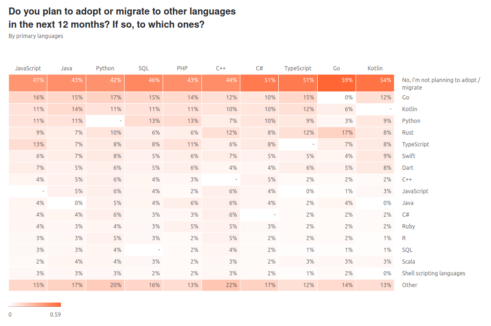
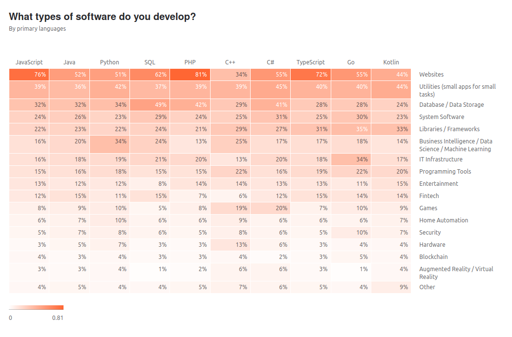

アイコン化されたプログラミング言語

Font Awesome を
面白いのでプログラミング言語を示す Font Awesome アイコンを拾ってみた。 色は気にしないように。
| Icon | Code |
|---|---|
<i class="fab fa-css3"></i> |
|
<i class="fab fa-erlang"></i> |
|
<i class="fab fa-html5"></i> |
|
<i class="fab fa-java"></i> |
|
<i class="fab fa-node-js"></i> |
|
<i class="fab fa-php"></i> |
|
<i class="fab fa-python"></i> |
|
<i class="fab fa-rust"></i> |
|
<i class="fab fa-swift"></i> |
HTML5 や CSS3 をプログラミング言語と言っていいか微妙だが，ついでということで（笑）
今回は 2020-07-16 時点の Font Awesome 5.13.1 で提供されるフリー・アイコンの中から目視で探してみた。 見落とし等あれば指摘していただくと主に私が喜びます。
アイコン・デザインは商標権とか絡んでくるから難しいかもしれないけど，こういうブランド化も面白いかもね。
【おまけ】 人気（？）のプログラミング言語
今回は TIOBE ランキング50位内にあるメジャーな言語で浚ってみたのだが，このランキングはいつも C と Java が2強で，あとはどんぐりの背比べと代わり映えがない。 強いて言うなら，以前は C++ が3位に絡んでたけど今は Python かな，やっぱり。
まぁ，保守的といえば保守的なんだろうけど…
何故か初夏の季節はプログラミング言語のランキング記事が増えるのだが，その中で個人的なイメージに近いのが以下の記事。
- The State of Developer Ecosystem in 2020 Infographic | JetBrains: Developer Tools for Professionals and Teams
- どのプログラミング言語が使われているのか、JetBrainsが調査レポートを発表：移行先はGo、Kotlin、Python - ＠IT
これは JetBrains 社によるアンケート結果だそうで，なかなか面白い内容である。
たとえば，いわゆる「第1言語」としてよく使われているのが
- JavaScript
- Java
- Python
- HTML/CSS
- SQL
- PHP
- C++
- C#
- TypeScript
- Go
- Kotlin
らしい。 まぁ HTML/CSS は洒落だと思うが。 そんで，これらの中で移行を検討している言語が以下の表になっている。

まぁ，そもそも「移行したい」と考えるほうが少数派なのだが，その少数派の動向を見ると， Java や Python などから Go へ移行したいと考えている人が意外にいる一方で Go から Rust へ移行したいと考える人も多いことに気づく。
これって，この数年くらいのトレンドに合ってるような気がするのだが，どうだろう。
ちなみに，上の人気（？）プログラミング言語の用途は以下のようになっている。
